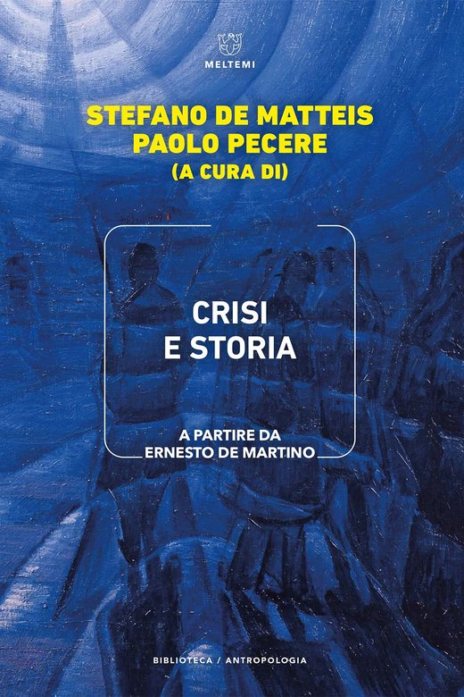
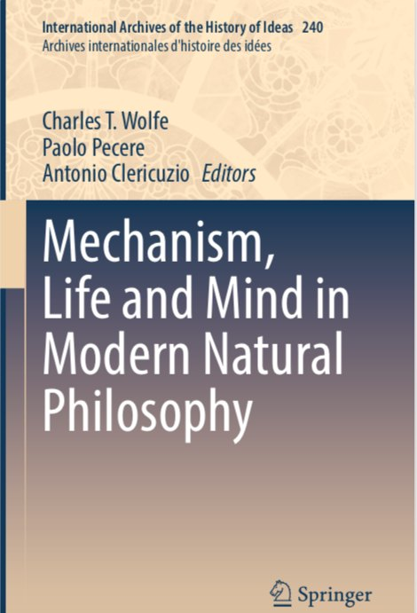
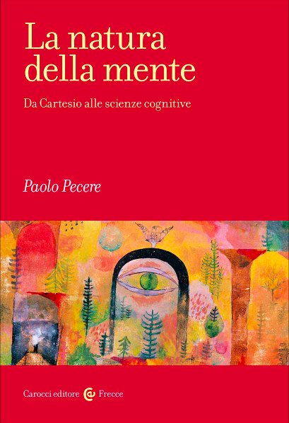
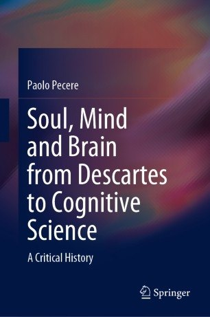

Paolo Pecere is a historian of philosophy and a writer of fiction and literary non-fiction.
He is associate professor at the University of Roma Tre.
His last scholarly book is Soul, Mind and Brain from Descartes to Cognitive Science (Springer 2020).
His first novel La vita lontana was published in 2018 and he is the author of Risorgere (2019) and Il dio che danza (2021).
Recent books
All books
Crisi e storia. A partire da Ernesto de Martino Il senso della natura. Sette sentieri per la terra
Il senso della natura. Sette sentieri per la terra El sentido de la naturaleza. Siete sendas por la tierra
El sentido de la naturaleza. Siete sendas por la tierra
Mechanism, Life and Mind in Modern Natural Philosophy
La natura della mente. Da Cartesio alle scienze cognitive Il dio che danza
Il dio che danza
Soul, Mind and Brain from Descartes to Cognitive Science Risorgere
RisorgereRecent papers
All papers-
2026
Moral uncertainty in the Anthropocene: moral circle and precautionary animism
"Asian Journal of Philosophy", vol. 5, no. 2, 2026, article 63.
-
2026
Plant cognition after Darwin: historical and epistemological remarks
"History and Philosophy of the Life Sciences", vol. 48, no. 3, 2026, article 33.
-
2025
Caves, Hands and Therianthropes: Methodological Notes for a Philosophy of Prehistoric Art
"Mechane", no. 10 (2025), pp. 99-122.
-
2025
Synthesis and the Unity of Mind: From Idealistic Philosophy to Psychology (and Back)
in Lukas M. Verburgt (ed.), "The Early Years of Mind: Making Contemporary Philosophy and Psychology" (Oxford, 2025; online edn, Oxford Academic, 24 July 2025).
-
2025
"Kant-Studien", vol. 116, no. 2, 2025, pp. 208-229.
Essays, stories, media
Essays & journalism
- Warburg, gli Hopi, il pensiero dell’arteGATE, 2026
- BolleGATE, 2026
- L’isola degli spiritiGATE, 2026
Stories & travelogues
- Il ritorno dei funghi magiciLucy, 2024
- La via delle renneIl Tascabile, 2024
- Il Buddha delle montagneGATE, 2024
Media
- Il fuoco e la terraFestival della Mente 2026
- Roma Tre incontra Adriana CavareroRoma TRE - Filosofia
- La mente degli animali da Cartesio a oggiMondadori Education